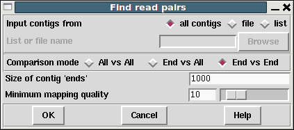

This function is used to check the positions and orientations of readings taken from the same templates. It is invoked from the gap5 View menu.
For each template the relative position of its readings and the contigs they are in are examined. This analysis can give information about the relative order, separation and orientations of contigs and also show possible problems in the data. The search can be over the whole database or a subset of contigs named in a list (see section Lists) or file of file names. The results are written to the Output Window and plotted in the Contig Comparator (See section Contig Comparator.). Read pair information is also used to colour code the results displayed in the Template Display (see section Template Display).
Note that during assembly the template names and lengths are copied from the experiment files into the gap database. See section Experiment Files. The accuracy of the lengths will depend upon some size selection being performed during the cloning procedures.

Users choose to process "all contigs" or a subset selected from a file of file names ("file") or a list ("list"). If either of the subset options is selected the "browse" button will be activated and can be clicked on to call up a file or list browser dialogue.